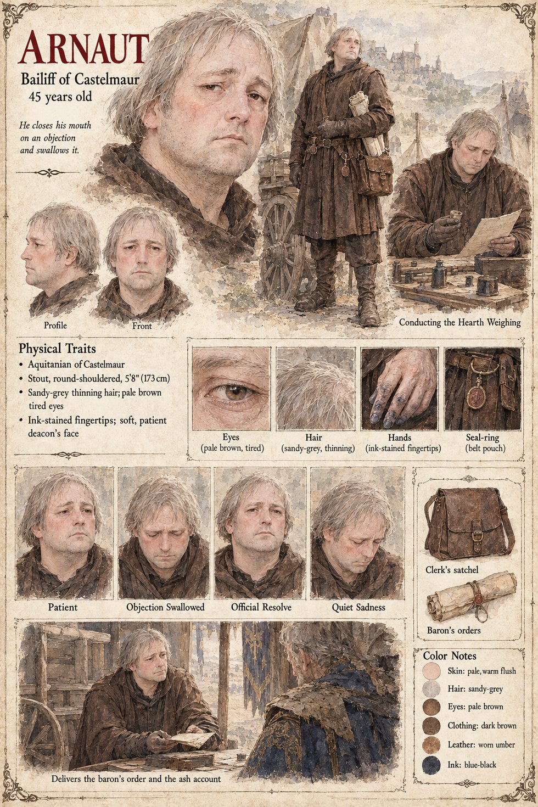

Arnaut
Bailiff of Castelmaur · twenty years in the baron's service · 45 years old
A stout, tired, reasonable-looking man of forty-five with the face of a deacon and the hands of someone who has spent twenty years being told by a lord what to find, and who does not particularly like the work: he likes, as he has told his wife, the evenings after it. He comes up the lane of Vilarnau at Prime with six men-at-arms, a clerk, and a pair of iron-bound weights recast the previous month on the baron's order, which the village's three most obstinate arithmeticians put at a fifth heavier than the ones they replace. When the reeve claims the stranger as a guest of the Charter, Arnaut, who has never in twenty years found a clause of it he could not bend, opens his mouth to dispute the point, glances at Bertran's face, and shuts it. The new weights are found to be what the arithmeticians estimated, and no one says so.
Sent for by Aimeric, he observes, in the careful voice of a man who has spent twenty years not observing things, that the weighing clause is the one he has never found a way to bend, since no hearth may be distrained until the stone has found the default by weight; on the sixteenth of Jorren he reads the baron's order aloud from a roll, that the stone be used or broken. On the twentieth, with the village's refusal in front of him, he finds the one way through the clause: a village that declines to put its grain on the stone has declined the weighing, and the Charter's protection lapses with it. The chronicle calls it perfectly sound law. On the third of Kerren he gives the baron the ash account, standing. What became of him is not said. The sheet's ink-stained fingertips and sandy, thinning hair are its own.